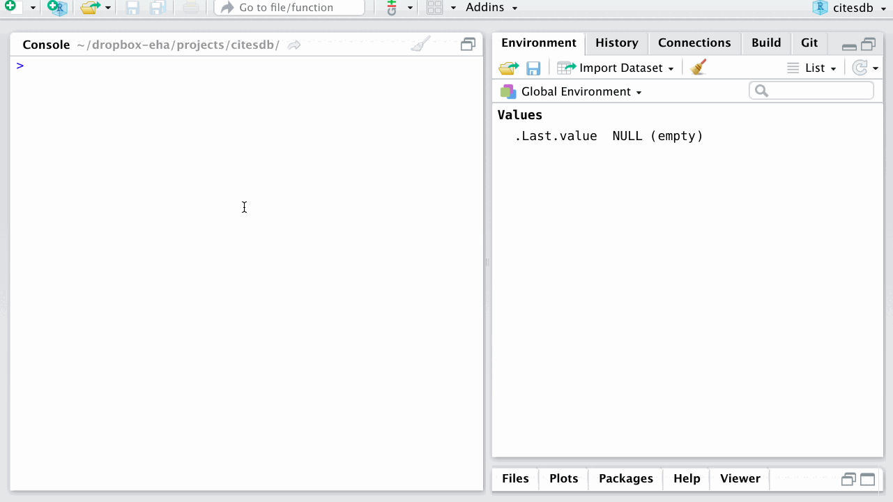

Exploring CITES Trade Data with citesdb
Source:vignettes/exploring-cites-trade-data-with-citesdb.Rmd
exploring-cites-trade-data-with-citesdb.Rmdcitesdb is an R package to conveniently analyze the full CITES shipment-level wildlife trade database, available at https://trade.cites.org/. This data consists of over 40 years and 20 million records of reported shipments of wildlife and wildlife products subject to oversight under the Convention on International Trade in Endangered Species of Wild Fauna and Flora. The source data are maintained by the UN Environment World Conservation Monitoring Centre. Harfoot et al. (2018) provide a recent overview of broad temporal and spatial trends in the data.
Installation
Install the citesdb package with this command:
devtools::install_github("ropensci/citesdb")
Note that since citesdb installs a source dependency from GitHub, you will need package build tools.
Usage
Getting the data
When you first load the package you will see a message like this:
library(citesdb)
#> Local CITES database empty or corrupt. Download with cites_db_download()Not to worry, just do as it says and run cites_db_download(). This will fetch the most recent1 database from online, an approximately 158 MB download. It will expand to over 1 GB in the local database. During the download and database building, up to 3.5 GB of disk space may be used temporarily.
Using the database for basic analyses
Once you fetch the data you can connect to the database with the cites_db() command. You can use the cites_shipments() command to load a remote tibble that is backed by the database but not loaded into R. You can use this to analyze CITES data without ever loading it into memory, then gather your results with the dplyr function collect(). For example, as demonstrated in the package README file, one could compute the number of shipment records per year like so:
library(citesdb) library(dplyr) #> #> Attaching package: 'dplyr' #> The following objects are masked from 'package:stats': #> #> filter, lag #> The following objects are masked from 'package:base': #> #> intersect, setdiff, setequal, union cites_shipments() %>% group_by(Year) %>% summarize(n_records = n()) %>% arrange(desc(Year)) %>% collect() #> # A tibble: 44 x 2 #> Year n_records #> <int> <dbl> #> 1 2018 1326 #> 2 2017 1015719 #> 3 2016 1262632 #> 4 2015 1296532 #> 5 2014 1109872 #> 6 2013 1127363 #> 7 2012 1096645 #> 8 2011 950144 #> 9 2010 894011 #> 10 2009 908669 #> # … with 34 more rows
(Note that running collect() on all of cites_shipments() will load a >3 GB data frame into memory!)
Alternatively, one could visualize the same information by piping results from a cites_shipments() call directly into ggplot():
library(ggplot2) breaks <- seq(from = 1975, to = 2020, by = 5) cites_shipments() %>% group_by(Year) %>% summarize(n_records = n()) %>% mutate(log10_n_records = log10(n_records)) %>% ggplot(aes(x = Year, y = n_records)) + geom_point() + geom_line(linetype = "dashed", size = 0.2) + ylab("Number of Records") + theme_minimal() + scale_x_continuous(breaks = breaks)

cites_shipments() %>% group_by(Year) %>% summarize(n_records = n()) %>% mutate(log10_n_records = log10(n_records)) %>% ggplot(aes(x = Year, y = log10_n_records)) + geom_point() + geom_line(linetype = "dashed", size = 0.2) + ylab("log10(Number of Records)") + ylim(1.5, 6.5) + theme_minimal() + scale_x_continuous(breaks = breaks)

Metadata
The package database also contains tables of field metadata, codes used, and CITES countries. This information comes from “A guide to using the CITES Trade Database”, on the CITES website. Convenience functions cites_metadata(), cites_codes(), and cites_parties() access this information:
head(cites_metadata()) #> # A tibble: 6 x 2 #> variable description #> <chr> <chr> #> 1 Year year in which trade occurred #> 2 Appendix CITES Appendix of taxon concerned #> 3 Taxon scientific name of animal or plant concerned #> 4 Class scientific name of animal or plant concerned #> 5 Order scientific name of animal or plant concerned #> 6 Family scientific name of animal or plant concerned head(cites_codes()) #> # A tibble: 6 x 3 #> field code description #> <chr> <chr> <chr> #> 1 Purpose B Breeding in captivity or artificial propagation #> 2 Purpose E Educational #> 3 Purpose G Botanical garden #> 4 Purpose H Hunting trophy #> 5 Purpose L Law enforcement / judicial / forensic #> 6 Purpose M Medical (including biomedical research) head(cites_parties()) #> # A tibble: 6 x 6 #> country code former_code non_ISO_code date data_source #> <chr> <chr> <lgl> <lgl> <chr> <chr> #> 1 Afghanistan AF FALSE FALSE 1986-01-28 'A guide to using the CITES Trade Database', Version 8, Anne… #> 2 Africa XF FALSE TRUE <NA> 'A guide to using the CITES Trade Database', Version 8, Anne… #> 3 Åland Islands AX FALSE FALSE <NA> 'A guide to using the CITES Trade Database', Version 8, Anne… #> 4 Albania AL FALSE FALSE 2003-09-25 'A guide to using the CITES Trade Database', Version 8, Anne… #> 5 Algeria DZ FALSE FALSE 1984-02-21 'A guide to using the CITES Trade Database', Version 8, Anne… #> 6 American Samoa AS FALSE FALSE <NA> 'A guide to using the CITES Trade Database', Version 8, Anne…
More information on the release of shipment-level data can be found in the ?guidance help file.
Direct Database Connection
citesdb stores data in an on-disk MonetDB SQL database. If you want to use SQL commands for complex queries or otherwise want to directly access the database connection, use the cites_db() command:
con <- cites_db() DBI::dbListTables(con) #> [1] "cites_codes" "cites_metadata" "cites_parties" "cites_shipments" "cites_status"
Note that MonetDB, as implemented by the MonetDBLite package, currently has a limitation of only one connection to the database at a time. Therefore, if you are running R in multiple sessions (say, one in a console and separately knitting an R Markdown document), you will receive this error:
Error: Local citesdb database is locked by another R session.
Try closing or running cites_disconnect() in that session.cites_disconnect() shuts down the current connection, freeing up your other session to connect.
If you are using a recent version of RStudio interactively, loading the citesdb package also brings up a browsable pane in the “Connections” tab that lets you explore and preview the database tables.

Click on the arrows to see the data types in each table, or the table icon to the right for a preview of the table. The SQL button (which appears in RStudio >=1.2) opens an SQL document to write and preview SQL queries directly.
CITES Metadata with rcites
Suppose we were interested in CITES data on sharks from the order Lamniformes. We might begin an analysis by visualizing shipments of these organisms and their derived products over time:
cites_shipments() %>% filter(Order == "Lamniformes") %>% group_by(Year, Taxon) %>% summarize(n_records = n()) %>% ggplot(aes(x = Year, y = n_records, color = Taxon)) + geom_point() + geom_line(linetype = "dashed", size = 0.2) + ylab("Number of Records") + theme_minimal() + scale_x_continuous(breaks = breaks, limits = c(1990, max(breaks)))

What accounts for the temporal differences in the number of CITES records we observe? Why are there no data prior to 2001? It would be helpful to know more about the history of these particular species within CITES.
Fortunately, the rcites package provides access to the Speciesplus/CITES Checklist API, which includes metadata about species and their protected status through time. To use the functions within this package, users will first need to sign up for a Speciesplus API account in order to generate a personal access token. This token can then be set for the current R session using rcites::set_token() or can be stored permanently if written to the user’s .Renviron file (the approach taken in this tutorial). See here for more information on use of the API access tokens.
As an initial step in rcites workflows, it will typically be most useful to call spp_taxonconcept() on some taxa of interest. Using the specific example of one of our Lamniformes sharks, the great white (Carcharodon carcharias), as a query taxon, we can see that this function returns a variety of information:
library(rcites) spp_taxonconcept(query_taxon = "Carcharodon carcharias")$general$id
#> [1] "11210"Importantly, we can collect the ID for our taxon of interest from this output and store it as an object for ease of reference:
great_white_id <- spp_taxonconcept("Carcharodon carcharias")$general$id
Using our stored ID variable, we can query other rcites functions like spp_cites_legislation(), which returns the CITES listing and reservation status for the query taxon. Note that reservations are essentially exemptions declared by particular CITES Parties in reference to specific taxa.
spp_cites_legislation(great_white_id)$cites_listings
#> # A tibble: 4 x 6
#> id taxon_concept_id is_current appendix change_type effective_at
#> <chr> <chr> <lgl> <chr> <chr> <chr>
#> 1 904 11210 TRUE II + 2005-01-12
#> 2 906 11210 TRUE II R+ 2005-01-12
#> 3 907 11210 TRUE II R+ 2005-01-12
#> 4 905 11210 TRUE II R+ 2005-01-12So this function query reveals that the great white is listed under CITES Appendix II (as of 12 January 2005) and that three CITES Parties have active reservations for this species.
To reveal the full listing and reservation history, rather than just current information, we use the scope = "all" argument:
spp_cites_legislation(great_white_id, scope = "all")$cites_listings
#> # A tibble: 13 x 6
#> id taxon_concept_id is_current appendix change_type effective_at
#> <chr> <chr> <lgl> <chr> <chr> <chr>
#> 1 899 11210 FALSE III + 2001-10-29
#> 2 904 11210 TRUE II + 2005-01-12
#> 3 898 11210 FALSE III R+ 2001-10-22
#> 4 900 11210 FALSE III R+ 2002-03-26
#> 5 901 11210 FALSE II R+ 2004-07-15
#> 6 902 11210 FALSE III R+ 2004-07-15
#> 7 906 11210 TRUE II R+ 2005-01-12
#> 8 907 11210 TRUE II R+ 2005-01-12
#> 9 905 11210 TRUE II R+ 2005-01-12
#> 10 22005 11210 FALSE III R- 2005-01-12
#> 11 22003 11210 FALSE III R- 2005-01-12
#> 12 22004 11210 FALSE III R- 2005-01-12
#> 13 23783 11210 FALSE II R- 2016-11-21Here, we see that the species was in fact listed under CITES Appendix III as early as 29 October 2001. This may account for the CITES trade records for this species that date prior to its uplisting to Appendix II, a status which affords more stringent protection and monitoring.
In general, the historical listing information provides critical context for CITES data interpretation. In this case, for instance, it is clear that the lack of CITES data for great white sharks prior to the year 2002 should not be taken as an indication of a lack of trade in this species during that time frame but rather a lack of intergovernmental oversight and data collection.
rcites also offers functions that return other useful metadata such as species distribution information:
spp_distributions(great_white_id)$distributions
#> # A tibble: 96 x 5
#> id iso_code2 name type tags
#> <chr> <chr> <chr> <chr> <chr>
#> 1 14 BS Bahamas COUNTRY ""
#> 2 101 TW Taiwan, Province of China TERRITORY ""
#> 3 1315 TR Turkey COUNTRY ""
#> 4 1704 GH Ghana COUNTRY ""
#> 5 5041 CV Cabo Verde COUNTRY ""
#> 6 5393 HR Croatia COUNTRY ""
#> 7 6460 GA Gabon COUNTRY ""
#> 8 8056 MA Morocco COUNTRY ""
#> 9 8181 ES Spain COUNTRY ""
#> 10 8286 SD Sudan COUNTRY ""
#> # … with 86 more rowsMore in-depth description of rcites and usage tutorials can be found via the package publication and website.
Pitfalls of Working with CITES Trade Data
The CITES shipment-level data is a valuable resource for understanding part of the global wildlife trade. However, care must be taken in working with this data. Incomplete or ambiguous data can lead to misinterpretation and different approaches to handling the data can lead to different conclusions. Harrington (2015), Berec, Vršecká, and Šetlíková (2018), Robinson and Sinovas (2018), and Eskew et al. (2019) all provide greater detail on challenges related to analyzing the CITES Trade Database. Also note the shipment-level guidance provided by CITES, which can be found in the ?guidance help file.
As an example, single shipments may be recorded multiple times, as they may be reported by both exporting and importing countries. Here we examine a set of shipments of orchids from a US exporter to the Netherlands:
cites_shipments() %>% filter(Year == 2016, Export.permit.RandomID == "ce63001ff5", Genus == "Paphiopedilum") %>% collect() %>% head() %>% knitr::kable()
| Year | Appendix | Taxon | Class | Order | Family | Genus | Term | Quantity | Unit | Importer | Exporter | Origin | Purpose | Source | Reporter.type | Import.permit.RandomID | Export.permit.RandomID | Origin.permit.RandomID |
|---|---|---|---|---|---|---|---|---|---|---|---|---|---|---|---|---|---|---|
| 2016 | I | Paphiopedilum appletonianum | NA | Orchidales | Orchidaceae | Paphiopedilum | live | 2 | NA | DE | US | NA | T | D | I | e75ff00c16 | ce63001ff5 | NA |
| 2016 | I | Paphiopedilum appletonianum | NA | Orchidales | Orchidaceae | Paphiopedilum | live | 2 | NA | DE | US | NA | T | D | E | NA | ce63001ff5 | NA |
| 2016 | I | Paphiopedilum armeniacum | NA | Orchidales | Orchidaceae | Paphiopedilum | live | 1 | NA | DE | US | NA | T | D | I | e75ff00c16 | ce63001ff5 | NA |
| 2016 | I | Paphiopedilum armeniacum | NA | Orchidales | Orchidaceae | Paphiopedilum | live | 1 | NA | DE | US | NA | T | D | E | NA | ce63001ff5 | NA |
| 2016 | I | Paphiopedilum callosum | NA | Orchidales | Orchidaceae | Paphiopedilum | live | 3 | NA | DE | US | NA | T | D | I | e75ff00c16 | ce63001ff5 | NA |
| 2016 | I | Paphiopedilum callosum | NA | Orchidales | Orchidaceae | Paphiopedilum | live | 3 | NA | DE | US | NA | T | D | E | NA | ce63001ff5 | NA |
See that each pair of shipments is identical except for Reporter.type, indicating that the shipment was reported both from the US and from the Netherlands. Note that while the importer reported both import and export permit numbers, the exporter reported only the export permit numbers.
How to deal with repeat records? If you are aggregating records to calculate total shipments it is best to remove them, but not every record is recorded twice. This code filters to use only the importer’s records, should all fields other than Reporter.type and Import.permit.RandomID be the same:
cites_shipments() %>% filter(Year == 2016, Export.permit.RandomID == "ce63001ff5", Genus == "Paphiopedilum") %>% collect() %>% group_by_at(vars(-Reporter.type, -Import.permit.RandomID)) %>% mutate(n = n()) %>% filter((n > 1 & Reporter.type == "I") | n == 1) %>% ungroup() %>% head() %>% knitr::kable()
| Year | Appendix | Taxon | Class | Order | Family | Genus | Term | Quantity | Unit | Importer | Exporter | Origin | Purpose | Source | Reporter.type | Import.permit.RandomID | Export.permit.RandomID | Origin.permit.RandomID | n |
|---|---|---|---|---|---|---|---|---|---|---|---|---|---|---|---|---|---|---|---|
| 2016 | I | Paphiopedilum appletonianum | NA | Orchidales | Orchidaceae | Paphiopedilum | live | 2 | NA | DE | US | NA | T | D | I | e75ff00c16 | ce63001ff5 | NA | 2 |
| 2016 | I | Paphiopedilum armeniacum | NA | Orchidales | Orchidaceae | Paphiopedilum | live | 1 | NA | DE | US | NA | T | D | I | e75ff00c16 | ce63001ff5 | NA | 2 |
| 2016 | I | Paphiopedilum callosum | NA | Orchidales | Orchidaceae | Paphiopedilum | live | 3 | NA | DE | US | NA | T | D | I | e75ff00c16 | ce63001ff5 | NA | 2 |
| 2016 | I | Paphiopedilum charlesworthii | NA | Orchidales | Orchidaceae | Paphiopedilum | live | 2 | NA | DE | US | NA | T | D | I | e75ff00c16 | ce63001ff5 | NA | 2 |
| 2016 | I | Paphiopedilum concolor | NA | Orchidales | Orchidaceae | Paphiopedilum | live | 1 | NA | DE | US | NA | T | D | I | e75ff00c16 | ce63001ff5 | NA | 2 |
| 2016 | I | Paphiopedilum dayanum | NA | Orchidales | Orchidaceae | Paphiopedilum | live | 1 | NA | DE | US | NA | T | D | I | e75ff00c16 | ce63001ff5 | NA | 2 |
Citation
If you use citesdb in a publication, please cite both the package and source data:
Ross, Noam, Evan A. Eskew, and Nicolas Ray. 2019. citesdb: An R package to support analysis of CITES Trade Database shipment-level data. Journal of Open Source Software, 4(37), 1483, https://doi.org/10.21105/joss.01483
UNEP-WCMC (Comps.) 2019. Full CITES Trade Database Download. Version 2019.2. CITES Secretariat, Geneva, Switzerland. Compiled by UNEP-WCMC, Cambridge, UK. Available at: https://trade.cites.org.
Contributing
Have feedback or want to contribute? Great! Please take a look at the contributing guidelines before filing an issue or pull request.
Please note that this project is released with a Contributor Code of Conduct. By participating in this project you agree to abide by its terms.
References
Berec, Michal, Lucie Vršecká, and Irena Šetlíková. 2018. “What Is the Reality of Wildlife Trade Volume? CITES Trade Database Limitations.” Biological Conservation 224: 111–16. https://doi.org/10.1016/j.biocon.2018.05.025.
Eskew, Evan A., Noam Ross, Carlos Zambrana-Torrelio, and William B. Karesh. 2019. “The CITES Trade Database Is Not a "Global Snapshot" of Legal Wildlife Trade: Response to Can et al., 2019.” Global Ecology and Conservation 18: e00631. https://doi.org/10.1016/j.gecco.2019.e00631.
Harfoot, Michael, Satu A. M. Glaser, Derek P. Tittensor, Gregory L. Britten, Claire McLardy, Kelly Malsch, and Neil D. Burgess. 2018. “Unveiling the Patterns and Trends in 40 Years of Global Trade in CITES-Listed Wildlife.” Biological Conservation 223: 47–57. https://doi.org/10.1016/j.biocon.2018.04.017.
Harrington, Lauren A. 2015. “International Commercial Trade in Live Carnivores and Primates 2006-2012: Response to Bush et al. 2014.” Conservation Biology 29: 293–96. https://doi.org/10.1111/cobi.12448.
Robinson, Janine E., and Pablo Sinovas. 2018. “Challenges of Analyzing the Global Trade in CITES-Listed Wildlife.” Conservation Biology 32: 1203–6. https://doi.org/10.1111/cobi.13095.

When data is updated on the CITES website, we check for changes in structure, metadata, or documentation that we should pass on to the user (e.g., in the
?guidancehelp file) and re-package the data for distribution in our own repository. Data updates are expected twice per year, and we expect our repository to update within 2 weeks of the official release.↩